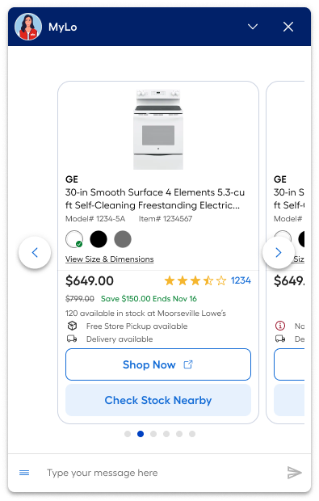

A third-party chatbot running on borrowed time
Lowe's customer support chatbot was powered by a third-party vendor. The system worked — barely — but it was a UX liability: visually disconnected from the rest of Lowes.com, incapable of reflecting Lowe's V3 design standards, and saddled with a chat invite that appeared in the bottom-right corner of every page and actively annoyed customers.
The business case was clear: Lowe's wanted to sell products through the chatbot experience, enable richer agent-side tooling, and bring the full interaction surface in-house. A rebuild was the only path.
Two problems, one root cause
Problem 1: Inconsistent experience. The third-party system offered limited customization. Colors, typography, component shapes — none of it matched Lowe's V3 standards. For customers switching between the chatbot and the main site, the disconnect was jarring. It eroded trust in the support experience.
Problem 2: An invasive chat invite. The initial chat invitation — the bottom-right prompt that appears when a customer lands on Lowes.com — was oversized, intrusive, and off-brand. User feedback was consistently negative: customers found it distracting, annoying, and disconnected from the site's visual language.

Side-by-side: legacy third-party system (left) vs. redesigned in-house system (right)
Component-by-component rebuild
The redesign started with a full audit of the existing chatbot — every state, every component, every interaction pattern documented and mapped against the V3 design system. This gave us a complete inventory and a clear picture of where the design debt was deepest.
We approached the rebuild component-first rather than screen-first: product card → store card → chat invite → menu tray → quick-select messages → payment form. Each component was designed independently with its own interaction spec, then integrated into the full flow.
The product card was the anchor component — Lowe's wanted to enable product sales through the chatbot, so everything else needed to work at the same density and visual quality as the product card. Getting that right first set the standard for everything that followed.
Prototyping was done in Figma throughout, with working prototypes handed to engineering for each component before the next was started. This parallel track compressed the timeline significantly.
Four components that defined the system

Product card carousel — the foundation component for in-chat commerce
1.5B visits. Positive feedback from agents and users.
The redesigned chatbot launched as the primary customer support interface on Lowes.com — replacing the third-party system entirely. At scale, it handled 1.5 billion total visits and engaged 4.7 million chat participants.
The qualitative feedback from both users and live agents was positive — the first time the chatbot had received consistent praise rather than complaints. The V3-aligned design removed the jarring context-switch between the main site and support. The minimized invite reduced the volume of negative feedback about intrusiveness.
Beyond the customer-facing win, the rebuild gave Lowe's full ownership of the chatbot design system — enabling future iteration without vendor constraints, and establishing the product card framework for potential in-chat commerce expansion.